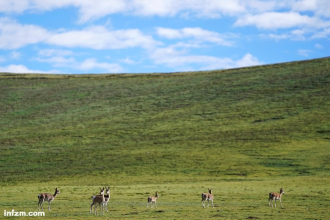

青海，三江源腹地，藏原羚在草场上自由迁徙。2017年9月26日，随着《建立国家公园体制总体方案》公布，中国国家公园建设进入实质性阶段。目前，我国已设立10个国家公园体制试点，三江源国家公园为首个试点。（视觉中国/图）
（本文首发于2017年10月5日《南方周末》）
“国家公园”中有三个关键词，“国家”指代全民所有、中央直管，“公”指代“公平公正公益”，“园”指代拥有法定边界的保护地。
国家公园体制的建立过程中，改革被提高到了前所未有的高度，“它完全是一次脱胎换骨的体制转变”。 “如果不是中央最高层的直接关注，改革的难度很大，因为部门利益和地方既得利益都特别大。”
《总体方案》公布后，接下来要确定国家公园的空间布局和规模。参考国际上的划分标准，以及中国自然生态系统物种的分布情况，“我国的国家公园的规模可能从60个到200个之间，国家公园的数量不应该很多，因为它本身面积很大”。
中国的国家公园会是什么模样？2017年9月26日，由中共中央办公厅、国务院办公厅印发的《建立国家公园体制总体方案》（下称《总体方案》）正式发布，第一次描绘出了国家公园的大概轮廓。
“国家公园是指由国家批准设立并主导管理，边界清晰，以保护具有国家代表性的大面积自然生态系统为主要目的，实现自然资源科学保护和合理利用的特定陆地或海洋区域。”据《总体方案》透露，“建立国家公园体制是党的十八届三中全会提出的重点改革任务，是我国生态文明制度建设的重要内容。”
从2013年十八届三中全会提出“建立国家公园体制”以来，2015年6月启动了为期三年的国家公园体制试点，当年9月，中共中央、国务院印发的《生态文明体制改革总体方案》又对建立国家公园体制提出了具体要求。国家公园正一步步从概念变为现实。
如今，《总体方案》的出台不仅清晰勾勒出中国国家公园的轮廓，也设定了建成具体时间表——最迟到2020年，中国的国家公园就要来了。
什么是国家公园？
中国人还有些陌生的“国家公园”，其实在将近一百五十年前便诞生了。世界上第一个现代意义的国家公园是成立于1872年的美国黄石国家公园。根据国家发改委网站消息，目前已有一百多个国家建立了国家公园。
国家公园在全世界范围内的迅速扩张有其必然性，世界自然保护联盟驻华代表朱春全觉得有几个原因：首先，国家公园是一个科学研究的对象，它可以帮助人去更好地理解在没有人类干扰下的自然演变；再者，大范围的自然生态系统被保护下来以后，会提供巨大的生态系统服务，吸收二氧化碳，放出氧气，涵养水源等；另外，国家公园为人接受自然教育提供了不可替代的机会。
世界上各个国家出现国家公园的历史背景并不一致。美国马什-比林斯-洛克菲勒国家历史公园的负责人里克·肯德尔告诉南方周末记者，即使在美国国内，每个国家公园都有属于它们自己的一套法案或公告，里面会提及建立某一个国家公园的具体原因。一般情况下，美国国家公园必须满足三个条件：它们必须是在全国范围内具有其特殊意义，通常为历史、文化或自然原因；资源必须具有代表性；管理可行，土地区域面积足够大而运营成本控制在可动用资金范围内。
中国从1956年开始建立自然保护区，但是国家公园却迟迟没有起步。在清华大学景观系主任杨锐看来，“这与新中国成立之初被西方封闭有关系，整个世界的自然保护运动是一个整体，许多发展中国家国家公园的建立过程中都有西方发达国家的影子。中国的这套系统（自然保护区）基本上和苏联是比较接近的。”
另外，也与中国的行政管理体制有一定关联。中国的很多自然保护地类型实际上都是成对出现，杨锐说，“比如风景名胜区跟国家森林公园是一年出现，国家地质公园和国家水利风景区同一年出现，国家湿地公园和国家城市湿地公园是同一年出现，但都是由不同部门成立的。”各个部门都对自然保护地感兴趣，但由于没有一个总体的顶层设计，所以造成了现在自然保护地中的矛盾。
国情的特殊性也阻碍了中国国家公园的建立脚步。早在1999年，杨锐就关注到了国家公园，当时有国外的环保组织想在滇西地区建立一个大河流域国家公园。但现实情况是，那个地区分布有大大小小几十个城镇和数百万居民。
人口众多是中国区别于其他国家的第一个特殊性，这意味着中国在建立国家公园过程中，将面临更严峻的挑战。据王蕾了解，目前世界上没有任何一个国家的自然保护区内拥有像中国这么多人口，“这是别的国家完全无法想象的”。
即便到了2013年11月，党的十八届三中全会首次提出建立国家公园体制，那时中国国内对国家公园的概念还是很模糊。
2014年10月，世界自然保护联盟驻华代表朱春全曾组织过一次论坛，邀请了13个相关国家部委的代表，“当时他们之间就有很多争论，也有人一开始误以为国家公园就是搞旅游开发的。”国研中心研究员苏杨也发现，许多人都只是将国家公园体制试点工作视为在原有保护地管理机构基础上再挂一块牌子。
这种讨论并没有持续很久。国家发改委社会发展司被中央指定为牵头单位，而另外两个参与单位是环保部和林业局，分管风景名胜区的住建部以及国家旅游局并不在名单之列。中央深改组进一步明确了原则，国家公园就是要以保护生态系统和保护生物多样性为目的。
朱春全是《建立国家公园体制试点》专家组成员之一，他很高兴最终《总体方案》中关于国家公园的定义，与自然保护联盟给出的定义基本吻合——国家公园首要的目的是生态保护。世界自然保护联盟的保护强度分为六类，国家公园属于这六类里面的第二类，保护强度略逊于自然保护区。
2017年6月26日，中央深改组第36次会议审议通过了《祁连山国家公园体制试点方案》。图为祁连山风光。（视觉中国/图）
“实行最严格的保护”
在确定“生态保护”的大前提下，过去对是否使用“公园”这个词，国内的意见也有分歧。
清华大学景观系主任杨锐是国家公园体制建设专家咨询委员会的成员之一，据他了解，从上世纪七十年代末开始，国内部分专家学者对公园这个词有所顾忌，“一提公园，就联想到城市公园。城市公园主要是为人服务的”。在他看来，这种顾虑是合理的，也是在中国国家公园体制建设过程中需要澄清的问题。
杨锐认为，“国家公园”中有三个关键词，即“国家”“公”和“园”。“国家”指代全民所有、中央直管，“公”指代“公平公正公益”，“园”指代拥有法定边界的保护地。
虽然在刚刚发布的《总体方案》中，中央明确建立国家公园的目的，就是为了保护生物多样，保护生态系统的原真性和完整性，并没有对旅游大书特书，但专门提到要发展“自然环境教育和游憩”，为未来国家公园如何服务公众留下了空间。王蕾分析，“全球的国家公园，但凡要用park这个词的时候，肯定意味着说某种程度上的公益服务，或者户外游憩，不管叫什么，不同之处只在于游憩活动开展的不同类型、强度和时空范围，但是肯定是要开门迎客、请人进入。”
在北京林业大学教授张玉钧看来，游憩和生态旅游在概念上已经融合，“避免旅游开发，但是要开展自然教育活动”。
原国家林业局野生动植物与自然保护区管理司巡视员陈建伟认为，国家公园的定义中应该包含两个责任：第一个责任是为国家、为民族、为子孙后代，同时也是为全人类，保护这些珍贵的自然遗产；第二个责任，必须要为全民提供亲近自然、保护环境、科学研究、宣传教育、生态体验包括游憩的责任，去积极适应人们日益增长的文化需求。
“在中国建立国家公园，显然不能走美国黄石公园模式。”世界自然保护联盟驻华代表朱春全曾对世界上主要的国家公园模式做过研究，所谓黄石模式，就是国家公园内没有居民居住，是把人排除在外的。中国自然保护区内不但有大量的人口，并且存在自然景观与文化景观并存的情况。
《总体方案》规定，虽然保护区内的不能进行开发，但是写明“引导当地政府在国家公园周边合理规划建设入口社区和特色小镇”。可以借鉴的是，美国和加拿大的国家公园周边，都有大量被国家公园拉动的小镇，甚至附近的州级公园也会被带动。
事实上，保护和开发之间的矛盾一直存在于世界上各地的国家公园。中国拟建的国家公园显然对“保护”异常重视。国研中心研究员苏扬观察到，《总体方案》明确了国家公园的定位“属于全国主体功能区规划中的禁止开发区域，纳入全国生态保护红线管控范围，实行最严格的保护”，而两年前印发的《生态文明体制改革总体方案》的表述是“国家公园实行更严格保护”。
苏扬分析，从“更”到“最”这一字之差，更多地表明了一种决心，“最严格的保护并非最严的防和最死的守，而是在细化保护需求的情况下采取更精准、执行更有力的管理。”
“如果不是最高层关注，改革难度很大”
值得注意的是，国家公园体制的建立过程中，改革被提高到了前所未有的高度。参与过《建立国家公园体制总体方案》相关工作的苏杨向南方周末记者反复强调了此次改革的特殊性，“它完全是一次脱胎换骨的体制转变。”
在十八届三中全会决定要“建立国家公园体制”后，2015年，国家发改委选定9省市开展国家公园体制试点，其中最重要的原则之一就是“统一”，目前各个试点单位都成立了专门统一的机构对景区进行管理。
《总体方案》则进一步明确了未来统一管理的方向，“由一个部门统一行使国家公园自然保护地管理职责”，而且“国家公园建立后，在相关区域内一律不再保留或设立其他自然保护地类型”。
“原来无论是十块牌子，还是五块牌子，都变成一个。”朱春全分析，“原来自然保护区也好，风景名胜区、地质公园、湿地公园，不管叫什么，统统取消，不再保留过去的，未来也不允许设立新的其他保护区类型。”
文件并没有明确由哪个中央部门来进行管理，朱春全认为，“这可能和国家下一步的机构改革相关联，所以现在还不知道究竟由哪个中央部委来管理，或者是成立一个全新的部门。”
可以肯定的是，统一由某个中央机构来进行管理，将会打破中国自然保护地挂牌子式的改革怪圈。自1980年代至今，中国自然保护地在过去三十年里，不断出现新的类型，保护地的管理权一直处于被分割的状态。对于许多保护地而言，每挂一块新牌子，意味着又多了一位“婆婆”。以九寨沟为例，它先后被挂上了九寨沟国家级自然保护区、风景名胜区、森林公园、地质公园和5A旅游景区五块牌子，意味着各个分管机构都有权对景区进行管理。
“风景名胜区是住建部门管的，地质公园是国土资源部管的，同一时间里九寨沟就有可能接到三个部门的要求，而往往这三个要求又是相互不通气的。”朱春全曾做过统计，目前中国已经形成了种类多达十几种的自然保护地类型，“九龙治水，可以说毫不夸张”。
苏扬认为，“如果不是中央最高层的直接关注，改革的难度很大，因为部门利益和地方既得利益都特别大。”
《总体方案》给出了未来国家公园整体的框架：公有土地由国家公园管理机构统一管理；集体土地则在充分征求其所有权人、承包权人意见基础上，优先通过租赁、置换等方式规范流转，最终也由国家公园管理机构统一管理。也就是说保护区内的土地在确权后，都将交由国家公园管理机构管理。
资金方面，《总体方案》确定建立财政投入为主的多元化资金保障机制，也就是以“中央财政投入为主体，但同时也要吸引社会投入”。朱春全说。据苏杨了解，“目前的国家公园试点区，已经成为或正努力成为省一级预算单位，相当于按正厅级单位来安排财政的预算”。
立法方面则是《总体方案》最为模糊的部分。《总体方案》提出要界定好在明确国家公园与其他类型自然保护地关系的基础上，研究制定有关国家公园的法律法规。
对此，朱春全解释了决策层的考量，“本来那些保护区类型就很多，现在出了一个新的类型，首先要解决问题后再去立法。”专家们的建议是先分类，对中国自然保护地进行统一分类，之后再用一部总体的上位法把各种类型的保护区界定下来。
谁会成为第一个国家公园？
按照《总体方案》规划，“到2020年，中国建立国家公园体制试点基本完成，整合设立一批国家公园。”那么谁会成为中国第一个国家公园？
2015年，国家发改委选的九个试点都是采用地方申报的方式。其中浙江的仙居，湖南的南山等地，都并非公众所熟悉的地方，但同时，一些公众熟悉的旅游胜地最初也拒绝进入试点名单。
不过，十大国家公园体制试点（加上后来的祁连山）并不意味着就是未来的国家公园，“试点的主要目的在于找出问题，之后在试点的过程当中把它总结经验，将来能不能成为国家公园，要看是不是符合国家公园标准。”朱春全说。
最终还得按照《总体方案》的标准进行考核，“各地都有一个竞争的关系”。目前国家公园的入选标准还在研究中，《总体方案》只是公布了一个框架——根据自然生态系统的代表性面积的适应性和管理的可行性，明确国家公园的准入条件，确保自然生态系统和自然遗产具有国家代表性和典型性。
“国家代表性指的是国家层面上的，不是哪个县、哪个市，或者哪个省推荐的。”朱春全分析，此外，“你选择这个地方全是集体的土地，或者这个地方本来人就很多，那可能要避开这些地方。”朱春全进一步解释，至于“管理上具有可行性”，“就是要看它的价值，也要看它的社会经济（效益）的可行性。”
《总体方案》公布后，接下来就是要确定国家公园的空间布局和规模。朱春全的团队承担了一部分研究，参考国际上的划分标准，以及中国自然生态系统物种的分布情况，他认为，“我国的国家公园的规模可能从60个到200个之间，国家公园的数量不应该很多，因为它本身面积很大。”
按照构想，国家公园并不能提供旅游服务，未来的国家公园与旅游景点的最大不同就在于将提供环境教育服务。
“公园会首先教育你，在野外有可能遇到鹿，也有可能遇到熊，但在不同时间段遇到熊或者鹿时，你采取对策是不一样的。”加拿大班夫国家公园的自然教育就给王蕾留下了深刻的印象，目前在班夫国家公园环境教育的工作量上升得最快。但是中国国家公园的自然教育注定要有很长的路要走，“现在国内的景点，常常是立个牌子，然后冲着一块石头，告诉你这里像个仙桃什么的”。
由于中国国家公园全民公益性的定位，未来将是一个低门票的趋势。北京林业大学自然保护区院院长雷春光了解到，国外很多国家公园门票都很便宜，只收基本的运行费用，“黄石公园也就是十多美元，芬兰的国家公园对全民开放，一分钱不收”。
朱春全提醒，虽然是低门票趋势，制度设计上也是为大家创造平等的机会，让每一个人都会有机会去。但是进入人数过多对整个国家公园将造成很大的压力和破坏。未来从管理上来讲，每天进入的人数一定是有限的，“就是你排队也好，你是等也好，但是至少机会是均等的”。